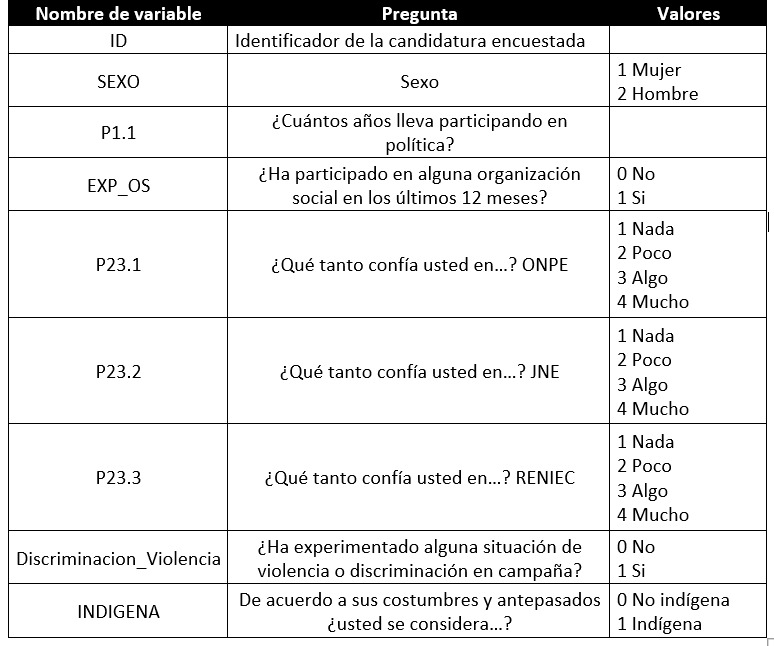
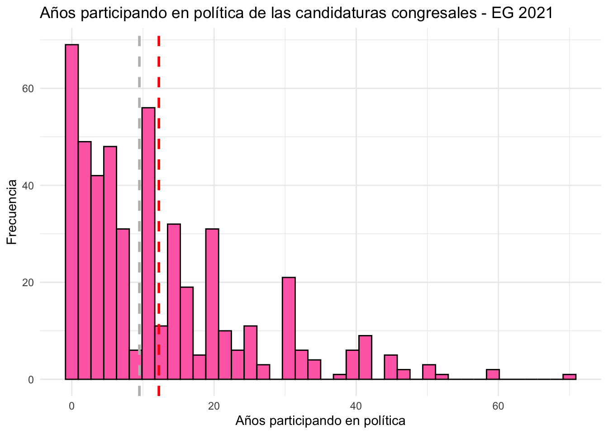
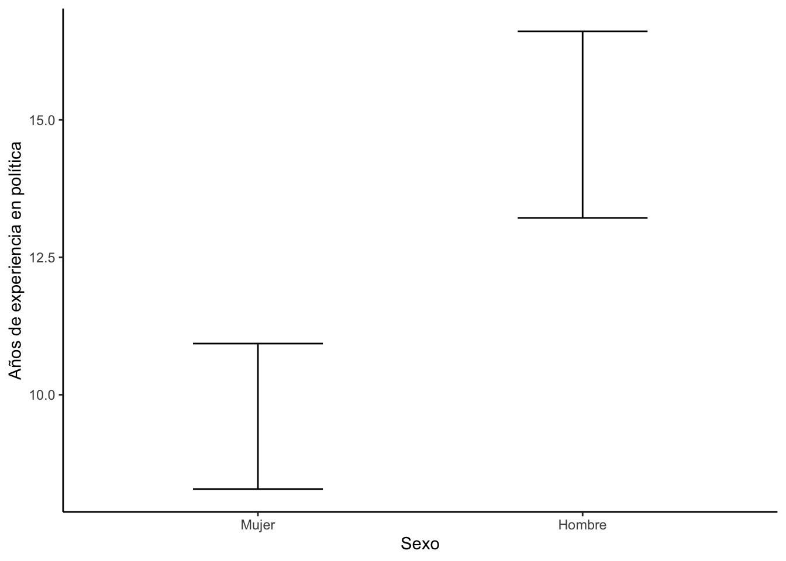
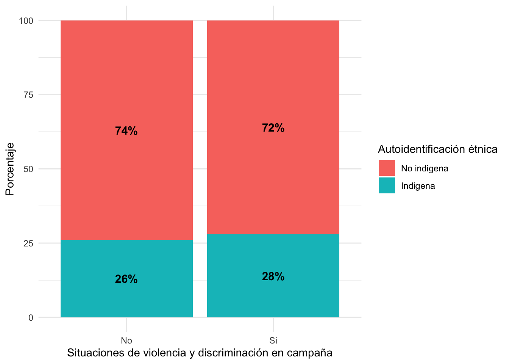

FACULTAD DE CIENCIAS SOCIALES - PUCP
En el 2021, el Jurado Nacional de Elecciones aplicó la Encuesta Nacional a Candidaturas Congresales 2021, con el objetivo de elaborar un perfil de las candidaturas que postularon al Congreso de la República en el marco de las Elecciones Generales 2021. Las temáticas que abordaron fueron las características sociodemográficas, trayectoria política, actitudes democráticas, motivaciones de las candidaturas, campaña electoral, discriminación y acoso político. Puede acceder a la información mediante el libro Radiografía de las candidaturas congresales. Además, la información se encuentra disponible en: base de datos
Para esta sesión se usará una versión que contiene las siguientes variables:

En ese sentido en esta sesión responderemos a la siguiente pregunta:
library(rio)
library(dplyr)
library(lsr)
library(ggplot2)data = import("ENCC2021.xlsx")
names(data)## [1] "ID" "SEXO"
## [3] "P1.1" "EXP_OS"
## [5] "P23.1" "P23.2"
## [7] "P23.3" "Discriminacion_Violencia"
## [9] "INDIGENA"data %>%
summarise(minimo=min(P1.1,na.rm = T),
maximo=max(P1.1,na.rm = T),
media=mean(P1.1,na.rm = T),
mediana=median(P1.1,na.rm = T),
sd=sd(P1.1,na.rm = T),
Q1=quantile(P1.1,na.rm = T,0.25),
Q3=quantile(P1.1,na.rm = T,0.75))## minimo maximo media mediana sd Q1 Q3
## 1 0 70 12.23878 9.5 12.34334 3 18data %>%
ggplot(aes(x = P1.1)) +
geom_histogram(color = "black", fill = "hotpink1", bins = 40) +
ggtitle("Años participando en política de las candidaturas congresales - EG 2021 ") +
ylab("Frecuencia")+xlab("Años participando en política")+
geom_vline(xintercept = mean(data$P1.1, na.rm = TRUE), color = "red", linetype = "dashed", size = 1) + # Línea de la media
geom_vline(xintercept = median(data$P1.1, na.rm = TRUE), color = "grey", linetype = "dashed", size = 1) + # Línea de la mediana
theme_minimal()
Encontramos que la proporción de candidaturas con experiencia en organizaciones sociales es de 80.4%, calculemos cuanto será este valor en la población.
Previamente ya habíamos calculado la frecuencia de los que contaban con experiencia en organizaciones sociales y los que no, ingresemos esos datos en el prop.test
tabla1## # A tibble: 2 × 3
## Participacion_OS Freq Porcentaje
## <fct> <int> <dbl>
## 1 No 96 19.6
## 2 Si 394 80.4prop.test(394,394+96,conf.level = 0.95)##
## 1-sample proportions test with continuity correction
##
## data: 394 out of 394 + 96, null probability 0.5
## X-squared = 180.02, df = 1, p-value < 2.2e-16
## alternative hypothesis: true p is not equal to 0.5
## 95 percent confidence interval:
## 0.7655499 0.8377461
## sample estimates:
## p
## 0.8040816La proporción de candidaturas con experiencia en organizaciones sociales se encuentra entre 76.55% y 83.77%, a un 95% de confianza.
Anteriormente, encontramos que las candidaturas congresales tienen, en promedio, 12 años participando en política. Calculemos cuanto es este valor en la población.
ic_media = data %>%
summarise(Media = mean(P1.1, na.rm=T),
LimiteInferior = ciMean(P1.1, na.rm=T)[1],
LimiteSuperior = ciMean(P1.1, na.rm=T)[2])
ic_media## Media LimiteInferior LimiteSuperior
## 1 12.23878 11.14316 13.33439A un 95% de confianza podemos concluir que, en promedio, una candidatura congresal de las EG 2021 tiene aproximadamente entre 11 y 13 años de experiencia participando en política.
data = data %>% mutate(SEXO = factor(SEXO, labels = c("Mujer","Hombre")))grafico = data %>%
group_by(SEXO) %>%
summarise(media = mean(P1.1,na.rm=T),
Superior = ciMean(P1.1,na.rm=T)[1],
Inferior = ciMean(P1.1,na.rm=T)[2])
grafico## # A tibble: 2 × 4
## SEXO media Superior Inferior
## <fct> <dbl> <dbl> <dbl>
## 1 Mujer 9.61 8.28 10.9
## 2 Hombre 14.9 13.2 16.6En la muestra si existe una diferencia entre los años de experiencia en política de las candidaturas hombres y mujeres. De esa manera, los hombres tienen más años (en promedio) participando en política que las mujeres. Analicemos si esto se cumple en la población de candidaturas congresales de las EG 2021.
t.test(P1.1~SEXO,data)##
## Welch Two Sample t-test
##
## data: P1.1 by SEXO
## t = -4.8576, df = 458.95, p-value = 1.633e-06
## alternative hypothesis: true difference in means between group Mujer and group Hombre is not equal to 0
## 95 percent confidence interval:
## -7.452953 -3.159633
## sample estimates:
## mean in group Mujer mean in group Hombre
## 9.607287 14.913580H0: No existe diferencia entre los promedios de los años de experiencia política entre hombres y mujeres. /H1: Existe diferencia entre los promedios de los años de experiencia política entre hombres y mujeres.
Analizando el pvalor, podemos rechazar la hipótesis nula y así afirmar que las medias de los años de experiencia política entre hombres y mujeres, no son iguales.
Constatemos cual es la media más alta con un gráfico:
ggplot(grafico,aes(x=SEXO,y=media))+
geom_errorbar(aes(ymin=Inferior,ymax=Superior),width=0.4)+
xlab("Sexo")+
ylab("Años de experiencia en política")+theme_classic()
¿De qué manera se relacionan las situaciones de discriminación en campaña y la autoidentificación étnica de las candidaturas?
data = data %>%
mutate(Discriminacion_Violencia = factor(Discriminacion_Violencia,labels=c("No","Si")))data = data %>%
mutate(INDIGENA = factor(INDIGENA,labels=c("No indigena","Indigena")))table(data$Discriminacion_Violencia)##
## No Si
## 211 279tabla1=table(data$Discriminacion_Violencia,data$INDIGENA)
tabla1##
## No indigena Indigena
## No 157 54
## Si 202 77Revisemos el supuesto
chisq.test(tabla1)$expected##
## No indigena Indigena
## No 154.5898 56.4102
## Si 204.4102 74.5898Si cumple con el mínimo por celda.
tablapor1 = tabla1 %>%
prop.table(1) %>%
round(2) #redondear el resultado a 2 decimales
tablapor1##
## No indigena Indigena
## No 0.74 0.26
## Si 0.72 0.28toPlot1 = as.data.frame(tablapor1)
names(toPlot1) = c("Discriminacion_Violencia", "Indigena", "Porcentaje") ggplot(toPlot1, aes(x=Discriminacion_Violencia, y=Porcentaje*100, fill=Indigena)) +
geom_bar(position="stack", stat="identity")+ #Stack indica que son barras apiladas
geom_text(aes(label=paste0(Porcentaje*100,"%")),
position = position_stack(vjust = 0.5),
size = 4,
fontface="bold")+
labs(x="Situaciones de violencia y discriminación en campaña", y="Porcentaje", fill="Autoidentificación étnica")+
theme_minimal()
chisq.test(tabla1)##
## Pearson's Chi-squared test with Yates' continuity correction
##
## data: tabla1
## X-squared = 0.15506, df = 1, p-value = 0.6937H0: La autoidentificación étnica de las candidaturas es estadísticamente independiente de las situaciones de violencia o discriminación en campaña electoral
HA: La autoidentificación étnica de las candidaturas es estadísticamente dependiente de las situaciones de violencia o discriminación en campaña electoral
¿Cuál es la confianza de las candidaturas congresales en los organismos electorales durante las EG 2021?
data=data %>%
mutate(suma = P23.1 + P23.2 + P23.3)library(scales)
data = data %>%
mutate(indicador = rescale(suma, to = c(0, 100)))data %>%
group_by(SEXO) %>%
summarise(
Media = mean(indicador),
Mediana = median(indicador),
Desviacion = sd(indicador),
Minimo = min(indicador),
Maximo = max(indicador),
Q1 = quantile(indicador, 0.25), #Primer cuartil
Q3 = quantile(indicador, 0.75) #Tercer cuartil
)## # A tibble: 2 × 8
## SEXO Media Mediana Desviacion Minimo Maximo Q1 Q3
## <fct> <dbl> <dbl> <dbl> <dbl> <dbl> <dbl> <dbl>
## 1 Mujer 71.1 77.8 22.0 0 100 55.6 88.9
## 2 Hombre 68.6 66.7 22.3 0 100 55.6 88.9